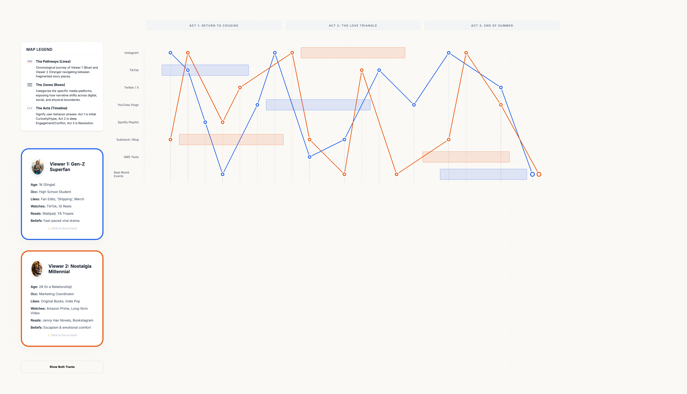

Interactive Transmedia Map
A digital interactive map that turns the fragmented, multi-platform narrative of "The Summer I Turned Pretty" into a cohesive visual journey.

Role
Systems Thinking, UX
Timeline
2 Weeks
Tools
Web Technologies
Context
Academic (Transmedia)
The Challenge
Navigating the Chaos
When a story lives everywhere—from TikTok to printed books to Spotify—it’s easy for audiences to feel untethered. The challenge was finding a way to gather these scattered pieces and weave them back into a single, cohesive narrative map.
Tracing Empathy Across Platforms
A Gen-Z Superfan and a Nostalgia Millennial might love the same story, but they experience it through entirely different digital lenses. I needed to create a visual language that honored both journeys without losing the emotional core.
"How do we map a story that refuses to stay in one place? The goal was to visualize the digital footprints audiences leave behind as they follow a transmedia narrative."
The Solution
I mapped the emotional and chronological journey of the audience, acting almost as a cartographer of the narrative. The interactive board breaks down the story's evolution across digital, social, and physical spaces, guiding viewers through three distinct narrative acts.
-
Systems Mapping Chronological sequencing
-
Persona Tracking Differentiating audience paths
-
Platform Categorization Social, digital, & physical
Reflection
This project taught me that even the most chaotic, sprawling transmedia stories have an underlying heartbeat. By mapping these digital journeys, I realized that we aren't just tracking platforms or touchpoints—we’re visualizing human curiosity, connection, and the very real spaces where audiences come together to share a story.